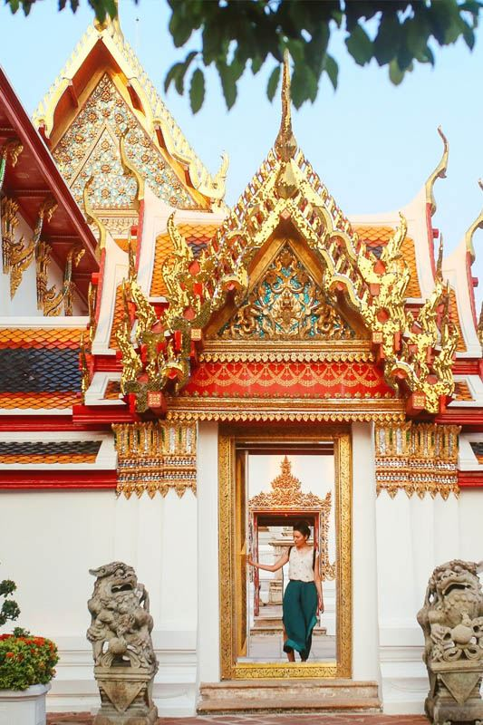

Wat Pho Temple Bangkok Temple of the Reclining BuddhaHistoric temple with 46-meter golden Buddha and traditional Thai massage school, 45 minutes from Royal Ivory Hotel

About Wat Pho Temple
Wat Pho Temple (Temple of the Reclining Buddha) stands as one of Bangkok's oldest and most revered temples, a magnificent Buddhist complex that houses the famous 46-meter golden Reclining Buddha and Thailand's first traditional massage school. Located in historic Rattanakosin Island, this UNESCO-recognized temple represents over 200 years of Thai Buddhist heritage and healing traditions.
What makes Wat Pho extraordinary is its dual significance as both spiritual center and wellness destination. Beyond the awe-inspiring Reclining Buddha, the temple complex features over 1,000 Buddha images, stunning traditional architecture, and the birthplace of traditional Thai massage, making it a unique cultural experience that combines religious devotion with ancient healing arts.
For Royal Ivory Hotel guests, Wat Pho offers an authentic journey into Thai Buddhist culture and traditional wellness practices. Whether you're seeking spiritual inspiration, cultural education, or therapeutic massage treatments, this historic temple provides experiences that connect visitors with Thailand's deepest cultural roots and healing traditions.
Getting to Wat Pho Temple from Royal Ivory Hotel
Wat Pho is located in Bangkok's historic Rattanakosin district, accessible by a scenic boat journey along the Chao Phraya River or by taxi through the city. The boat route offers cultural immersion and river views that enhance the temple experience.
Scenic Boat Route (Recommended) - 45-50 minutes
- Walk to BTS Nana Station (2 minutes from Royal Ivory Hotel)
- Take BTS Sukhumvit Line to Siam (2 stops), transfer to Silom Line
- Take BTS to Saphan Taksin (3 stops from Siam)
- Board Chao Phraya Express Boat at Central Pier (Saphan Taksin)
- Take boat to Tha Tien Pier (N8) - 6 stops on tourist boat
- Walk 3 minutes from pier to Wat Pho entrance
Total Cost: BTS 90฿ + Boat 50฿ = 140฿ | Journey Time: 45-50 minutes | Experience: Cultural river journey
Direct Transportation
- Taxi/Grab: 30-60 minutes depending on traffic (150-300 Baht)
- Tuk-tuk: Cultural experience, negotiate price (200-400 Baht)
- Hotel tour: Royal Ivory can arrange temple tour with transport
🚤 Royal Ivory Cultural Journey Tip: The boat route via Chao Phraya River offers stunning views of riverside temples and traditional Thai life. Start early (08:00-09:00) to avoid crowds at the temple and enjoy the cooler morning weather. Consider combining with Grand Palace visit (5-minute walk from Wat Pho).
The Famous Reclining Buddha
The centerpiece of Wat Pho is the magnificent Reclining Buddha statue, one of Thailand's most iconic religious images. This massive golden figure represents Buddha entering Nirvana and showcases the incredible artistry and devotion of Thai craftspeople from the early 19th century.
Reclining Buddha Specifications
| Feature | Measurements | Materials | Significance |
|---|---|---|---|
| 📏 Length | 46 meters (151 feet) | Brick and mortar core | Represents Buddha's final earthly moment |
| 📐 Height | 15 meters (49 feet) | Gold leaf covering | Peaceful transition to Nirvana |
| 👣 Feet Details | 5 meters long | Mother-of-pearl inlay | 108 auspicious characteristics |
| 🏗️ Construction | Built in 1832 | Traditional techniques | Rama III period masterpiece |
Spiritual & Artistic Significance
- Religious meaning: Depicts Buddha's entry into Nirvana, final liberation from earthly suffering
- Artistic mastery: Demonstrates Thai sculptural and decorative arts at their finest
- Cultural symbol: One of Thailand's most recognizable Buddhist images worldwide
- Pilgrimage destination: Attracts Buddhist devotees from across Southeast Asia
- Educational value: Teaches Buddhist philosophy through visual representation
Viewing Experience
The Reclining Buddha is housed in a purpose-built hall that allows visitors to walk around the entire statue, appreciating different perspectives and intricate details. The serene facial expression and graceful positioning create a profound spiritual atmosphere that inspires contemplation and wonder regardless of visitors' religious backgrounds.

Temple Complex & Architecture
Wat Pho encompasses a vast complex of traditional Thai Buddhist architecture, featuring over 1,000 Buddha images, numerous pavilions, courtyards, and the famous collection of stupas (chedis) that create one of Bangkok's most photographically striking religious sites.
Architectural Highlights
- 91 stupas: Beautiful decorated towers representing different periods
- 4 main stupas: Towering monuments honoring first four Chakri kings
- Buddha hall: Main ordination hall with precious Buddha images
- Manuscript library: Traditional repository of Buddhist texts
- Bell tower: Classic Thai temple architecture element
Cultural & Educational Elements
Wat Pho serves as Thailand's first public university, established as an educational center for traditional medicine, astronomy, and literature. Stone inscriptions throughout the temple provide instruction in traditional Thai massage techniques, herbal medicine, and Buddhist philosophy, making it a living library of Thai wisdom.
🏛️ Living Heritage Site
Educational mission: Thailand's first public university and knowledge center
Stone inscriptions: Ancient texts on massage, medicine, and philosophy
Artistic legacy: Showcase of traditional Thai craftsmanship and design
Cultural continuity: Active temple maintaining centuries-old traditions
Traditional Thai Massage School & Treatments
Wat Pho houses Thailand's most prestigious traditional massage school, established in 1955 as the birthplace of certified Thai massage education. The temple's massage program maintains the highest standards of traditional healing arts, offering authentic treatments in a sacred setting.
Massage School Credentials
- Established 1955: First official traditional Thai massage school
- UNESCO recognition: Traditional Thai massage inscribed as cultural heritage
- Master practitioners: Highly trained therapists maintaining ancient techniques
- Educational authority: Trains massage therapists worldwide
- Sacred setting: Treatments in traditional temple environment
Massage Services & Pricing
💆 Authentic Thai Massage Treatments:
Traditional Thai massage: 420 Baht (30 min), 720 Baht (60 min)
Foot massage: 420 Baht (30 min), 720 Baht (60 min)
Oil massage: 720 Baht (60 min), 1,080 Baht (90 min)
Operating hours: 08:00-17:00 daily
Booking: Walk-in basis, early morning recommended
Traditional Healing Philosophy
- Holistic approach: Treats body, mind, and spirit as integrated whole
- Energy lines (sen): Traditional understanding of body's energy pathways
- Therapeutic techniques: Stretching, pressure points, and rhythmic movements
- Preventive care: Focus on maintaining health and preventing illness
- Spiritual element: Massage as meditation and compassionate healing
Temple Etiquette & Visiting Guidelines
As an active place of worship and sacred site, Wat Pho requires respectful behavior and appropriate dress. Understanding temple etiquette enhances the spiritual experience while showing proper respect for Thai Buddhist traditions.
Dress Code Requirements
| Category | Requirements | Not Acceptable | Solutions Available |
|---|---|---|---|
| 👕 Upper Body | Covered shoulders, modest neckline | Tank tops, sleeveless, low-cut | Rental clothing at entrance |
| 👖 Lower Body | Long pants/skirts to ankles | Shorts, mini-skirts, tight clothes | Wraparound cloths available |
| 👟 Footwear | Easy to remove shoes | Shoes inside Buddha halls | Shoe storage provided |
| 🎩 General | Conservative, respectful attire | Revealing or inappropriate clothing | Temple shop has suitable options |
Behavioral Guidelines
- Buddha images: Never point feet toward Buddha statues, sit respectfully
- Photography: Allowed in most areas, no flash in Buddha halls
- Quiet respect: Maintain peaceful atmosphere, speak softly
- Monks: Women should not touch monks, maintain respectful distance
- Sacred items: Don't touch Buddha images or religious artifacts
Frequently Asked Questions
How do I get to Wat Pho Temple from Royal Ivory Hotel?
From Royal Ivory Hotel: Take BTS to Saphan Taksin, then Chao Phraya Express Boat to Tha Tien Pier (N8), then 3-minute walk to temple. Total journey: 45-50 minutes. Alternative: Taxi direct (30-60 minutes depending on traffic, 150-300 Baht).
What are Wat Pho Temple opening hours and admission?
Wat Pho Temple is open daily 08:00-18:30. Admission: 200 Baht for foreigners, includes temple complex access and Reclining Buddha hall. Thai massage school operates 08:00-17:00. Best visiting times: early morning (08:00-10:00) or late afternoon (15:00-17:00) to avoid crowds.
What is the Reclining Buddha at Wat Pho?
The Reclining Buddha at Wat Pho is a massive 46-meter long and 15-meter high golden statue depicting Buddha entering Nirvana. Built in 1832, it's covered in gold leaf with mother-of-pearl inlaid feet showing 108 auspicious characteristics of Buddha. One of Thailand's most iconic religious images.
Can I get traditional Thai massage at Wat Pho?
Yes, Wat Pho houses Thailand's first traditional Thai massage school established in 1955. Authentic treatments available daily 08:00-17:00. Prices: 420 Baht for 30 minutes, 720 Baht for 60 minutes. Considered the most authentic Thai massage experience in Bangkok.
How long should I plan for a Wat Pho visit?
Plan 2-3 hours for complete temple experience including Reclining Buddha viewing, temple complex exploration, and optional massage treatment. Add 1-2 hours for transportation each way. Consider combining with nearby Grand Palace for full day cultural immersion.
Cultural Significance & Spiritual Experience
Wat Pho represents far more than a tourist attraction - it embodies Thailand's spiritual heart, educational traditions, and commitment to preserving ancient wisdom for future generations. The temple offers profound cultural insights into Thai Buddhist philosophy and traditional healing arts.
Religious & Cultural Importance
- Royal temple: Royal patronage spanning multiple reigns, highest temple classification
- Educational center: Thailand's first public university preserving traditional knowledge
- Pilgrimage site: Sacred destination for Buddhist devotees across Southeast Asia
- Cultural preservation: Living repository of Thai arts, crafts, and healing traditions
- International recognition: UNESCO acknowledgment of traditional massage heritage
Combining Temple Experience with Bangkok Culture
🏛️ Cultural Day Combinations
Temple district tour: Wat Pho morning, then nearby Grand Palace (5-minute walk)
River culture day: Boat journey to Wat Pho, then Wat Arun Temple via cross-river ferry
Wellness focus: Wat Pho massage, then Jim Thompson House for cultural education
Traditional + modern: Morning temples, afternoon luxury shopping at Siam Paragon